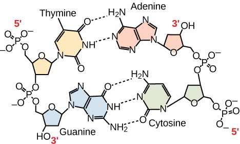

Chapter 6 Nucleic Acids
Authors: OpenStax / Libretext Formatted in RMarkdown by Nathan Brouwer under the Creative Commons Attribution License 4.0 license.
This chapter was adapted from LibreText General Biology, Chapter 3, Section 3.5: Nucleic Acids. The LibreText book is based on OpenStax Biology 2nd edition, Chapter 3, Section 3.5: Nucleic Acids. A full list of authors is found under the Contributors and Attributions section at the end of this document.
Nucleic acids are the most important macromolecules for the continuity of life. They carry the genetic blueprint of a cell and carry instructions for the functioning of the cell.
6.1 DNA and RNA
The two main types of nucleic acids are deoxyribonucleic acid (DNA) and ribonucleic acid (RNA). DNA is the genetic material found in all living organisms, ranging from single-celled bacteria to multicellular mammals. It is found in the nucleus of eukaryotes and in the organelles, chloroplasts, and mitochondria. In prokaryotes, the DNA is not enclosed in a membranous envelope.
The entire genetic content of a cell is known as its genome, and the study of genomes is genomics. In eukaryotic cells but not in prokaryotes, DNA forms a complex with histone proteins to form chromatin, the substance of eukaryotic chromosomes. A chromosome may contain tens of thousands of genes. Many genes contain the information to make protein products; other genes code for RNA products. DNA controls all of the cellular activities by turning the genes “on” or “off.”
The other type of nucleic acid, RNA, is mostly involved in protein synthesis. The DNA molecules never leave the nucleus but instead use an intermediary to communicate with the rest of the cell. This intermediary is the messenger RNA (mRNA). Other types of RNA—like rRNA, tRNA, and microRNA—are involved in protein synthesis and its regulation.
DNA and RNA are made up of monomers known as nucleotides. The nucleotides combine with each other to form a polynucleotide, DNA or RNA. Each nucleotide is made up of three components: a nitrogenous base, a pentose (five-carbon) sugar, and a phosphate group (Figure 3.5.1). Each nitrogenous base in a nucleotide is attached to a sugar molecule, which is attached to one or more phosphate groups.
![A nucleotide is made up of three components: a nitrogenous base, a pentose sugar, and one or more phosphate groups. Carbon residues in the pentose are numbered 1′ through 5′ (the prime distinguishes these residues from those in the base, which are numbered without using a prime notation). The base is attached to the 1′ position of the ribose, and the phosphate is attached to the 5′ position. When a polynucleotide is formed, the 5′ phosphate of the incoming nucleotide attaches to the 3′ hydroxyl group at the end of the growing chain. Two types of pentose are found in nucleotides, deoxyribose (found in DNA) and ribose (found in RNA). Deoxyribose is similar in structure to ribose, but it has an H instead of an OH at the 2′ position. Bases can be divided into two categories: purines and pyrimidines. Purines have a double ring structure, and pyrimidines have a single ring.](images/image5.jpeg)
Figure 6.1: A nucleotide is made up of three components: a nitrogenous base, a pentose sugar, and one or more phosphate groups. Carbon residues in the pentose are numbered 1′ through 5′ (the prime distinguishes these residues from those in the base, which are numbered without using a prime notation). The base is attached to the 1′ position of the ribose, and the phosphate is attached to the 5′ position. When a polynucleotide is formed, the 5′ phosphate of the incoming nucleotide attaches to the 3′ hydroxyl group at the end of the growing chain. Two types of pentose are found in nucleotides, deoxyribose (found in DNA) and ribose (found in RNA). Deoxyribose is similar in structure to ribose, but it has an H instead of an OH at the 2′ position. Bases can be divided into two categories: purines and pyrimidines. Purines have a double ring structure, and pyrimidines have a single ring.
The nitrogenous bases, important components of nucleotides, are organic molecules and are so named because they contain carbon and nitrogen. They are bases because they contain an amino group that has the potential of binding an extra hydrogen, and thus, decreases the hydrogen ion concentration in its environment, making it more basic. Each nucleotide in DNA contains one of four possible nitrogenous bases: adenine (A), guanine (G) cytosine (C), and thymine (T).
Adenine and guanine are classified as purines. The primary structure of a purine is two carbon-nitrogen rings. Cytosine, thymine, and uracil are classified as pyrimidines which have a single carbon-nitrogen ring as their primary structure (Figure 3.5.1). Each of these basic carbon-nitrogen rings has different functional groups attached to it. In molecular biology shorthand, the nitrogenous bases are simply known by their symbols A, T, G, C, and U. DNA contains A, T, G, and C whereas RNA contains A, U, G, and C.
The pentose sugar in DNA is deoxyribose, and in RNA, the sugar is ribose (Figure 3.5.1). The difference between the sugars is the presence of the hydroxyl group on the second carbon of the ribose and hydrogen on the second carbon of the deoxyribose. The carbon atoms of the sugar molecule are numbered as 1′, 2′, 3′, 4′, and 5′ (1′ is read as “one prime”). The phosphate residue is attached to the hydroxyl group of the 5′ carbon of one sugar and the hydroxyl group of the 3′ carbon of the sugar of the next nucleotide, which forms a 5′–3′ phosphodiester linkage. The phosphodiester linkage is not formed by simple dehydration reaction like the other linkages connecting monomers in macromolecules: its formation involves the removal of two phosphate groups. A polynucleotide may have thousands of such phosphodiester linkages.
6.2 DNA Double-Helix Structure
DNA has a double-helix structure (Figure 3.5.2). The sugar and phosphate lie on the outside of the helix, forming the backbone of the DNA. The nitrogenous bases are stacked in the interior, like the steps of a staircase, in pairs; the pairs are bound to each other by hydrogen bonds. Every base pair in the double helix is separated from the next base pair by 0.34 nm. The two strands of the helix run in opposite directions, meaning that the 5′ carbon end of one strand will face the 3′ carbon end of its matching strand. (This is referred to as antiparallel orientation and is important to DNA replication and in many nucleic acid interactions.)
Figure 6.2: Figure 3.5.2 : Native DNA is an antiparallel double helix. The phosphate backbone (indicated by the curvy lines) is on the outside, and the bases are on the inside. Each base from one strand interacts via hydrogen bonding with a base from the opposing strand. (credit: Jerome Walker/Dennis Myts)
Only certain types of base pairing are allowed. For example, a certain purine can only pair with a certain pyrimidine. This means A can pair with T, and G can pair with C, as shown in Figure 3.5.3. This is known as the base complementary rule. In other words, the DNA strands are complementary to each other. If the sequence of one strand is AATTGGCC, the complementary strand would have the sequence TTAACCGG. During DNA replication, each strand is copied, resulting in a daughter DNA double helix containing one parental DNA strand and a newly synthesized strand.
Art Connection 
Figure 3.5.3 : In a double stranded DNA molecule, the two strands run antiparallel to one another so that one strand runs 5′ to 3′ and the other 3′ to 5′. The phosphate backbone is located on the outside, and the bases are in the middle. Adenine forms hydrogen bonds (or base pairs) with thymine, and guanine base pairs with cytosine.
A mutation occurs, and cytosine is replaced with adenine. What impact do you think this will have on the DNA structure?
6.3 RNA
Ribonucleic acid, or RNA, is mainly involved in the process of protein synthesis under the direction of DNA. RNA is usually single-stranded and is made of ribonucleotides that are linked by phosphodiester bonds. A ribonucleotide in the RNA chain contains ribose (the pentose sugar), one of the four nitrogenous bases (A, U, G, and C), and the phosphate group.
There are four major types of RNA: messenger RNA (mRNA), ribosomal RNA (rRNA), transfer RNA (tRNA), and microRNA (miRNA). The first, mRNA, carries the message from DNA, which controls all of the cellular activities in a cell. If a cell requires a certain protein to be synthesized, the gene for this product is turned “on” and the messenger RNA is synthesized in the nucleus. The RNA base sequence is complementary to the coding sequence of the DNA from which it has been copied. However, in RNA, the base T is absent and U is present instead. If the DNA strand has a sequence AATTGCGC, the sequence of the complementary RNA is UUAACGCG. In the cytoplasm, the mRNA interacts with ribosomes and other cellular machinery (Figure 3.5.4).

Figure 3.5.4 : A ribosome has two parts: a large subunit and a small subunit. The mRNA sits in between the two subunits. A tRNA molecule recognizes a codon on the mRNA, binds to it by complementary base pairing, and adds the correct amino acid to the growing peptide chain.
The mRNA is read in sets of three bases known as codons. Each codon codes for a single amino acid. In this way, the mRNA is read and the protein product is made. Ribosomal RNA (rRNA) is a major constituent of ribosomes on which the mRNA binds. The rRNA ensures the proper alignment of the mRNA and the ribosomes; the rRNA of the ribosome also has an enzymatic activity (peptidyl transferase) and catalyzes the formation of the peptide bonds between two aligned amino acids. Transfer RNA (tRNA) is one of the smallest of the four types of RNA, usually 70–90 nucleotides long. It carries the correct amino acid to the site of protein synthesis. It is the base pairing between the tRNA and mRNA that allows for the correct amino acid to be inserted in the polypeptide chain. microRNAs are the smallest RNA molecules and their role involves the regulation of gene expression by interfering with the expression of certain mRNA messages. Table 3.5.1 below summarizes features of DNA and RNA.
Table 3.5.1 *: Features of DNA and RNA.
| Features of DNA and RNA | ||
|---|---|---|
| DNA | RNA | |
| Function | Carries genetic information | Involved in protein synthesis |
| Location | Remains in the nucleus | Leaves the nucleus |
| Structure | Double helix | Usually single-stranded |
| Sugar | Deoxyribose | Ribose |
| Pyrimidines | Cytosine, thymine | Cytosine, uracil |
| Purines | Adenine, guanine | Adenine, guanine |
Even though the RNA is single stranded, most RNA types show extensive intramolecular base pairing between complementary sequences, creating a predictable three-dimensional structure essential for their function.
As you have learned, information flow in an organism takes place from DNA to RNA to protein. DNA dictates the structure of mRNA in a process known as transcription, and RNA dictates the structure of protein in a process known as translation. This is known as the Central Dogma of Life, which holds true for all organisms; however, exceptions to the rule occur in connection with viral infections.
Link to Learning
- To learn more about DNA, explore the Howard Hughes Medical Institute BioInteractive animations on the topic of DNA.*
6.4 Summary
Nucleic acids are molecules made up of nucleotides that direct cellular activities such as cell division and protein synthesis. Each nucleotide is made up of a pentose sugar, a nitrogenous base, and a phosphate group. There are two types of nucleic acids: DNA and RNA. DNA carries the genetic blueprint of the cell and is passed on from parents to offspring (in the form of chromosomes). It has a double-helical structure with the two strands running in opposite directions, connected by hydrogen bonds, and complementary to each other. RNA is single-stranded and is made of a pentose sugar (ribose), a nitrogenous base, and a phosphate group. RNA is involved in protein synthesis and its regulation. Messenger RNA (mRNA) is copied from the DNA, is exported from the nucleus to the cytoplasm, and contains information for the construction of proteins. Ribosomal RNA (rRNA) is a part of the ribosomes at the site of protein synthesis, whereas transfer RNA (tRNA) carries the amino acid to the site of protein synthesis. microRNA regulates the use of mRNA for protein synthesis.
Art Connections
6.5 Analysis Questions
Free Response
6.6 Glossary
deoxyribonucleic acid (DNA): double-helical molecule that carries the hereditary information of the cell
messenger RNA (mRNA): DNA that carries information from DNA to ribosomes during protein synthesis
nucleic acid: biological macromolecule that carries the genetic blueprint of a cell
and carries instructions for the functioning of the cell
nucleotide: monomer of nucleic acids; contains a pentose sugar, one or more phosphate groups, and a nitrogenous base
phosphodiester: linkage covalent chemical bond that holds together the polynucleotide
chains with a phosphate group linking two pentose sugars of neighboring nucleotides
polynucleotide: long chain of nucleotides
purine: type of nitrogenous base in DNA and RNA; adenine and guanine are
purines, pyrimidine: type of nitrogenous base in DNA and RNA; cytosine, thymine, and uracil
are pyrimidines
ribonucleic acid (RNA): single-stranded, often internally base paired, molecule that is
involved in protein synthesis
ribosomal RNA (rRNA): RNA that ensures the proper alignment of the mRNA and the ribosomes
during protein synthesis and catalyzes the formation of the peptide linkage
transcription: process through which messenger RNA forms on a template of DNA
transfer RNA (tRNA): RNA that carries activated amino acids to the site of protein
synthesis on the ribosome
translation: process through which RNA directs the formation of protein
6.7 Contributors and Attributions
Connie Rye (East Mississippi Community College), Robert Wise (University of Wisconsin, Oshkosh), Vladimir Jurukovski (Suffolk County Community College), Jean DeSaix (University of North Carolina at Chapel Hill), Jung Choi (Georgia Institute of Technology), Yael Avissar (Rhode Island College) among other contributing authors. Original content by OpenStax (CC BY 4.0; Download for free at http://cnx.org/contents/185cbf87-c72...f21b5eabd@9.87).